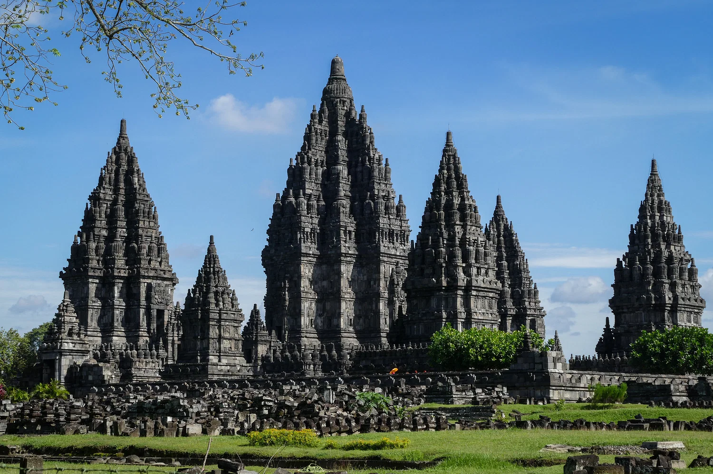

Candi Prambanan
Mahakarya Hindu di Tanah Jawa
Candi Prambanan adalah kompleks candi Hindu terbesar di Indonesia yang dibangun pada abad ke-9 Masehi. Candi ini didedikasikan untuk Trimurti, tiga dewa utama Hindu yaitu Brahma (Dewa Pencipta), Wisnu (Dewa Pemelihara), dan Siwa (Dewa Pemusnah). Terletak sekitar 17 kilometer timur laut dari Yogyakarta, candi ini adalah Situs Warisan Dunia UNESCO yang memukau ribuan wisatawan setiap tahunnya.
Keunikan & Aktivitas
Keunikan utama Candi Prambanan terletak pada arsitekturnya yang tinggi dan ramping, khas arsitektur Hindu, dengan candi Siwa sebagai candi utama yang menjulang setinggi 47 meter. Relief yang terukir di dinding candi mengisahkan epos Ramayana dan Krishnayana yang legendaris. Pengunjung dapat berjalan-jalan mengelilingi kompleks candi, belajar sejarah dari pemandu wisata, atau menikmati pertunjukan Sendratari Ramayana yang spektakuler dengan latar belakang candi di malam hari.
Galeri Candi